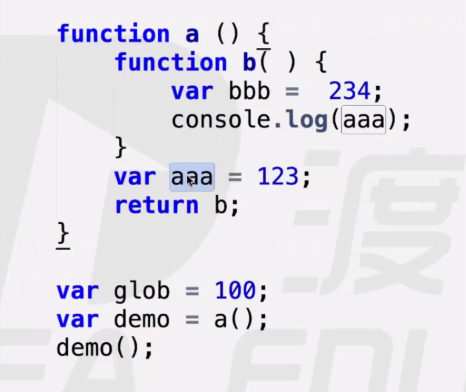
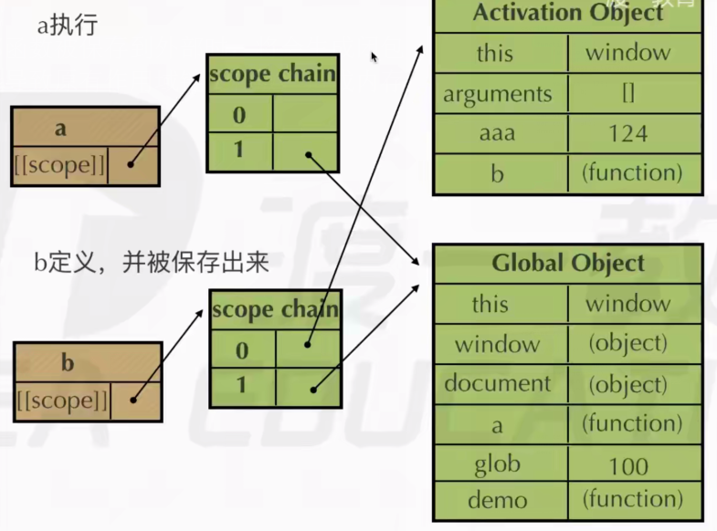

一、现象
函数内部嵌套函数，这种现象叫闭包，闭包会导致原有作用域链不释放，造成内存泄漏
内存泄漏
一个人捧着一把沙子，沙子泄露的越多，手中剩下的就越少
内存也是一样，内存被占用的越多，剩余的内存就越少，就像内存泄漏了一样，所以叫内存泄漏
- 如下图所示，正常情况下，函数a在结束时a的AO会销毁，但是闭包让函数b拿着a的劳动成果进行其他的操作，内存增大导致内存泄漏


二、闭包的作用
- 用于实现共有变量
// 例：计数器 |
- 用于缓存(存储结构)
function test(){ |
function eater(){ |
可以实现封装，属性私有化
模块化开发，防止污染全局变量
三、多对一闭包的解决方法(非常重要，以后常用)
- 我想输出1-9，理论上下边代码是正确的，但是按照下面的代码却是输出了十个10
function test() { |
- 解析
函数test定义并执行，函数test作用域链中存放GO、testAO
for循环将函数a的函数体放在了数组中，由于函数a没有执行，所以 console.log(i);中i不变化，数组的每个值相当于是装有a函数声明的房间的钥匙，总共10把，for循环执行完后，i值为10
用数组把函数扔出，用for函数执行数组中的函数
执行函数a，生成aAO，执行console.log(i);aAO中没有i，在testAO中找，此时i为10，所以输出10个10
- 修改：用立即执行函数
function test() { |
- 解析
循环执行第一圈时，立即执行函数执行，生成AO，j = 0，把函数a声明放到数组里，立即执行函数销毁（引用值销毁）
循环执行第二圈时，立即执行函数执行，生成新的AO，j - 1，把函数a声明放到数组里，立即执行函数销毁（引用值销毁）…
当函数a开始执行时，从立即执行函数的AO中获取j，然后输出